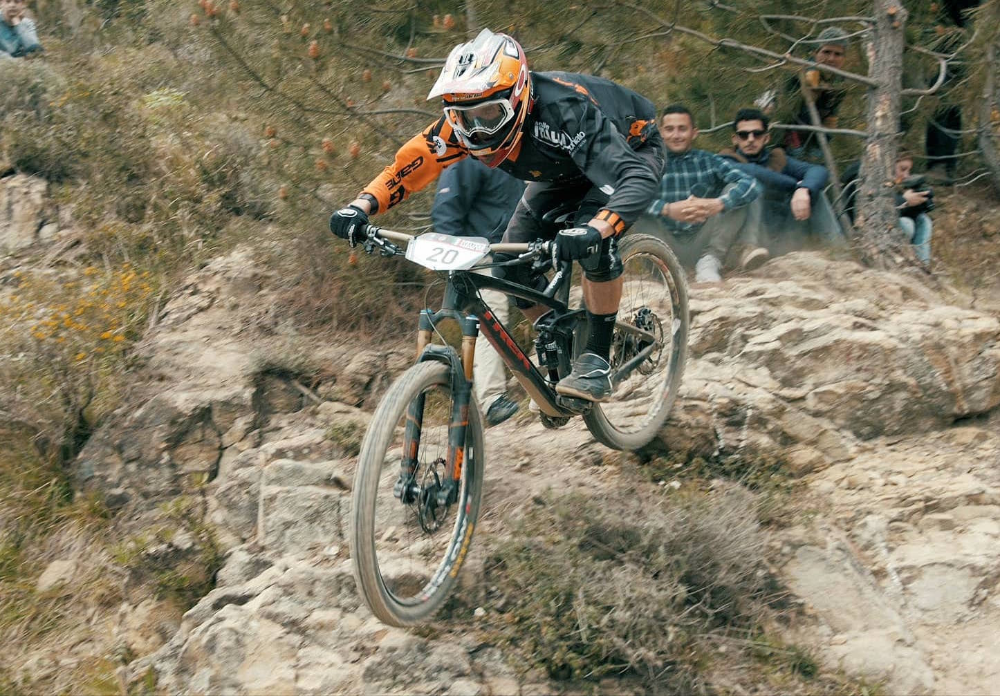
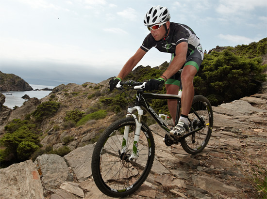

Esta página web es organizada por "Riders Sanci Club" dónde nos unimos todos los bikers que quieran salir a disfrutar de las rutas a la vez de conocer gente nueva. En este club hacemos todas las modalidades de MTB (Mountain Bike).
Es apto para todas las edades. Desde los más pequeños, los cuales pueden a aprender a andar en bici y hacer la modalidad que les interese. Como a los más mayores, los cuales será igual, pero saliendo al exterior.
Organizamos eventos, como rutas, carreras, quedadas... Para conocer gente, ver las bicicletas de los demás, opinar, y sobretodo, DIVERTIRSE!!
Hablaremos todo sobre las equipaciones de bicicleta. Ya que cada modalidad tiene su propia equipación.
Tenemos una tienda online externa, estará el link de acceso en la página de "Modalidades" ya que hablaremos sobre las bicicletas y sus características y en "Equipación" ya que hablaremos sobre la equipación, protecciones, etc. Hay gran variedad de productos en nuestra tienda online. Por supusto, estará el link de la tienda, en esta mis página, en el apartado que dice "Enlaces Externos".
Como es imprescindible saber de que trata cada modalidad de bicicleta antes de empezar, hablaremos sobre las modalidades que ofrecemos, que son todas las que existen en MTB. Para así, estar seguros de que nos va a gustar esa modalidad antes de comenzar a comprar la bicicleta, accesorios y equipación adecuados.
Pero claro que, antes de nada, hay que inscribirse en el club, dónde está toda la información en nuestra página web. Lo mejor de todo, es que tienes 1 mes para estar con el club antes de inscribirse, y así probar si te gusta, probar diferentes modalidades...
 Si te gusta el mundo de la bicicleta MTB, éste es tu club!
Tienda online: Riders Sanci Club